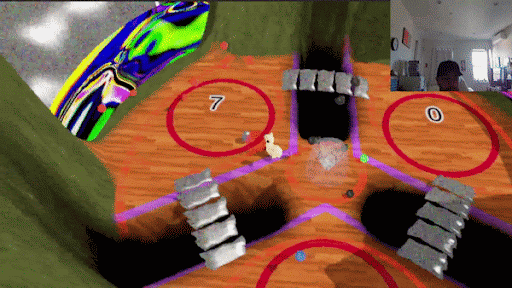

vec2 pos; uniform float time; uniform vec2 resolution; uniform vec2 mouse; float sdCircle( in vec2 p, in float r ) { float d = length(p) - r; return d; } void main(void) { vec2 pos = 2.0*gl_FragCoord.xy / resolution.y - vec2(resolution.x/resolution.y, 1.0); pos += vec2(1.,1.); vec2 displacement = vec2(sin(time), cos(time)); float AR = resolution.x / resolution.y; vec2 mousePos = vec2(mouse.x, 1. - mouse.y); mousePos *= AR; mousePos -= (AR - 1.) / 2.; vec2 viewDir = mousePos; float circleSDF = sdCircle(pos - vec2(0.5), 0.5); float circleMask = smoothstep(0., 0.001, circleSDF); vec2 dirToViewDir = normalize(viewDir - pos); float shadowMask = 0.; vec3 circleCol = vec3(pos.x, pos.y, clamp(mouse.x, 0.1, 0.6)) * (1. - circleMask); for (int i = 0; i < 60; i++) { shadowMask += 1. - smoothstep(0., 0.06, sdCircle(pos + dirToViewDir * 0.002 * float(i) - vec2(0.5), 0.215)); } gl_FragColor = vec4(vec3(1. - shadowMask) + circleMask + circleCol * 80., 1.); gl_FragColor = clamp(gl_FragColor, 0., 1.); gl_FragColor = clamp(gl_FragColor, vec4(0.), vec4(1.)); gl_FragColor *= 1. - smoothstep(length(vec4(0.84)), length(vec4(1.)), length(gl_FragColor)); gl_FragColor.a = 1.; }
<- backBreaking Unity
What I most love about learning graphics programming is that elements of game development that seem entirely extraterrestrial slowly start becoming accessible and manipulatable. I've started a new practice where I try to customize and break tools given to me by game engines. This can result in one of two outcomes: I either create something incredibly useful, or a heaping pile of garbage (which I might love even more!)
Since this is a page where I am supposed to demonstrate my utility, I will focus on a recent project of mine.
The Unity terrain editor is, for lack of a kinder word, lackluster. In working with it, I found myself wishing I had access to so many features that seemed impossible to reach! So... I made them! Well, some of them. I combined my knowledge of the engine and shader programming to add a few much-needed features. Below I list these additions!
Custom lighting
The terrain material that is used by default in unity does not allow for any shader programming. The first step I took was adding custom lighting functionality to it. Below is what happened. It might look like a mess, but I can assure you, it was a wonderful sight to behold since it meant I had successfully implemented the custom lighting/shading model! What is seen is the surface's albedo being altered based on a hash function that processes the terrain's normal.
Splat map accessibility
I noticed however, that with the new shading model, I had lost complete access to the terrain painting features typically available in the Unity terrain editor. I knew however, that the splat maps still existed within the terrain data. Upon research and some shadergraph programming, I found that I could pass in the splat map as a texture to my shader and process it manually. Below are the first modifications I made in order to visualize all channels of said splat map.
Multiple materials per terrain
It was a matter of processing the above mentioned texture in order to allow for multiple materials to exist within the same terrain. Well, not quite that, but by programming stepped shaders for each channel of the splat map, it was essentially that. Here we see the manipulatable terrain in action, albeit most definitely not the most polished of examples. The functionality remains!
FUTURE PLANS
One feature I have not gotten around to customizing is the sculpting of the terrain itself. Currently, the only alternatives are to either use the in-Unity editor, or to edit the RAW file of the height map itself. Neither of these seem too appetizing to me, so I intend on working on an alternative solution in the near future.